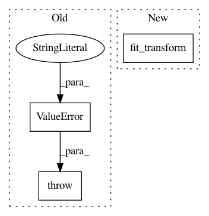

0e84313d49f4b3f5aef0e0d558ecc34e271b2ad5,grakel/graph_kernels.py,GraphKernel,fit,#GraphKernel#Any#Any#,414
Before Change
// Input validation and parsing
if X is None:
raise ValueError("fit input cannot be None")
else:
X_graph = parse_input(X)
num_of_graphs = len(X_graph)
After Change
self._nystroem = n_components
// sqrt of kernel matrix on basis vectors
U, S, V = svd(self._kernel.fit_transform(basis))
S = np.maximum(S, 1e-12)
self._nystroem = n_components
self.nystroem_normalization_ = np.dot(U / np.sqrt(S), V)
In pattern: SUPERPATTERN
Frequency: 3
Non-data size: 3
Instances
Project Name: ysig/GraKeL
Commit Name: 0e84313d49f4b3f5aef0e0d558ecc34e271b2ad5
Time: 2018-01-24
Author: y.siglidis@gmail.com
File Name: grakel/graph_kernels.py
Class Name: GraphKernel
Method Name: fit
Project Name: AIRLab-POLIMI/mushroom
Commit Name: 1a2462f18707e04f294224053473668820111cf5
Time: 2017-07-23
Author: carlo.deramo@gmail.com
File Name: PyPi/approximators/regressor.py
Class Name: Regressor
Method Name: fit
Project Name: EpistasisLab/tpot
Commit Name: 7e9c3b7fe153b5f533f94aabaa1e35a6c58a5540
Time: 2017-04-26
Author: supacoofoo@gmail.com
File Name: tpot/base.py
Class Name: TPOTBase
Method Name: fit